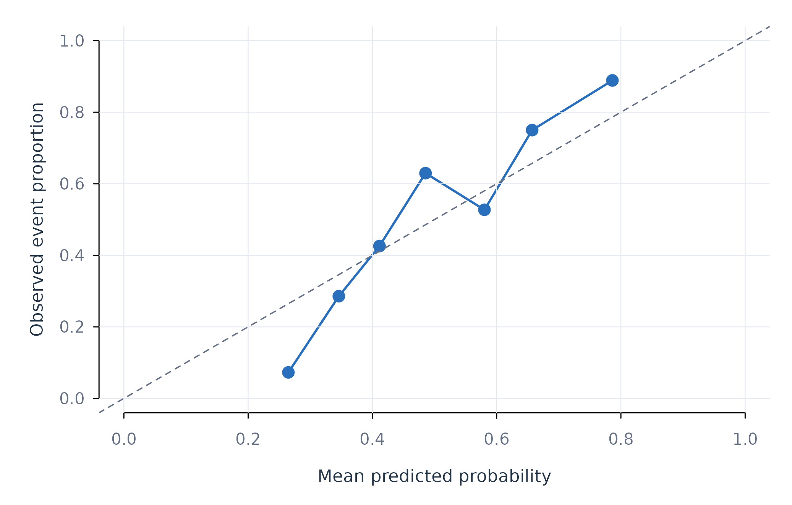

Analytic question
fit_glm() estimates generalized linear models at pooled,
subgroup, and person-specific scopes. The function accepts the same
panel structure as fit_lm() plus a response family. It
returns tidy held-out classification or regression metrics, predictions,
coefficients, and failures.
fit_glm() supports Gaussian, binomial, and Poisson
families with base R. The negative-binomial option delegates to
MASS::glm.nb(). A binomial model uses a logit link and
returns probabilities for the positive outcome level (McCullagh and Nelder
1989).
Define and model a binary outcome
fit_glm() models whether daily effort exceeds the median
in the complete 12-learner panel. The derived outcome supports a
reproducible classification example. It is not a clinical or policy
threshold. Table 1 compares pooled and individual held-out
performance.
glm_fit <- fit_glm(analysis_data, y = "high_effort", x = c("efficacy", "monitoring"), id = "name", family = "binomial", time = "day", scope = "both")
metrics(glm_fit, overall = TRUE)
#> scope model estimator subject subgroup n accuracy brier
#> 1 pooled binomial native .overall .all 384 0.6927083 0.1934623
#> 2 individual binomial native .overall .all 384 0.7473958 0.1697186
#> log_loss
#> 1 0.5732014
#> 2 0.5057784fit_glm() gives the individual models an aggregate
accuracy of about 0.74 in Table 1. The pooled model has an accuracy of
about 0.69. The individual models also have lower Brier score and log
loss. All three metrics favour the individual scope for this outcome and
split.
Inspect the probability model
coefs() returns log-odds coefficients. Table 2 keeps the
pooled scope so the model has one coefficient vector across
learners.
coefs(glm_fit, scope = "pooled")
#> scope model estimator subject subgroup term estimate
#> 1 pooled binomial native .all .all (Intercept) 1.34496602
#> 2 pooled binomial native .all .all efficacy -0.02924624
#> 3 pooled binomial native .all .all monitoring 0.00702312
#> std_error statistic p_value
#> 1 0.155855771 8.629555 6.159086e-18
#> 2 0.002350577 -12.442152 1.542899e-35
#> 3 0.002035846 3.449731 5.611450e-04coefs() reports changes in log odds per one-unit
predictor increase in Table 2. Exponentiating a coefficient would
produce an odds ratio, but the displayed scale preserves the fitted
model’s direct parameterization. Held-out probabilities should be
assessed alongside coefficient inference.
Plot classification calibration
plot_diagnostics() plots predicted probability against
whether each held-out classification was correct. Figure 1 adds a lowess
curve to summarize the relation.
plot_diagnostics(glm_fit, scope = "pooled", type = "calibration")
Figure 1. Held-out classification correctness across predicted probabilities.
Figure 1 assesses whether high reported probabilities correspond to more correct classifications. The plot does not replace a calibration intercept or slope. It identifies ranges where probability estimates warrant closer inspection.
Assumptions and failure checks
fit_glm() assumes that the chosen family and link
describe the conditional outcome distribution. A binomial outcome must
contain exactly two observed levels. The package selects the final
sorted level as the positive class unless factor levels specify an
order. Poisson regression assumes equality of the conditional mean and
variance. The negative-binomial family is preferable when count variance
exceeds the mean.
fit_glm() can fail for a person when the training
outcome contains one class, when complete rows are too few, or when
coefficients separate perfectly. The failure table retains these cases.
Aggregate metrics should be interpreted with the number of successful
people.
When to use which
fit_glm() is appropriate when the outcome distribution
has a supported family and coefficient interpretation matters.
fit_lm() is appropriate for a continuous outcome with an
identity link. fit_ml() is appropriate when algorithm
comparison and held-out prediction have priority over a single
parametric coefficient model.